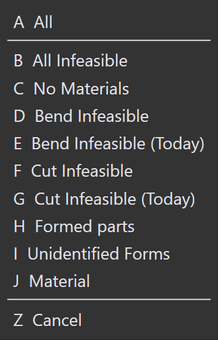

Saving filters
저장된 필터를 사용하면 Parts, Jobs 및 Layouts에서 자주 적용되는 조건을 재사용하여 워크플로우를 간소화할 수 있습니다. 각 모듈에는 기본 필터가 제공되지만 필요에 따라 Site Admins 또는 Programmers가 추가 필터 목록을 생성할 수 있습니다. 저장된 필터를 재사용하면 시간을 절약하고 검색 전반에 걸쳐 일관성을 유지하는 데 도움이 됩니다.
-
 아이콘을 클릭하여 기본 필터를 확인합니다.
아이콘을 클릭하여 기본 필터를 확인합니다.
필터 저장 단계
-
 아이콘을 클릭하고 필터 항목을 선택합니다.
아이콘을 클릭하고 필터 항목을 선택합니다.
-
선택한 필터 항목의 드롭다운 메뉴에서 옵션을 선택합니다. 선택한 조건 옆에 체크 표시가 나타납니다.

-
조건을 적용하려면
아이콘을 클릭한 다음
조건 추가 (Ctrl+PLUS)] 을 선택합니다. 이 단계를 반복하여 여러 조건을 추가할 수 있습니다.
-
조건과 함께 선택한 필터를 저장하려면 필터 저장… (Ctrl+S)] 를 클릭합니다.

-
이름을 입력한 다음 _Save 를 클릭합니다.

-
필터 저장 대화 상자에서 이전에 저장된 필터를 삭제할 수도 있습니다.
-
이러한 필터는 Default filter 목록에 저장됩니다. 여기서 재료 은 기본 목록에 저장됩니다.

| SiteAdmin 및 Admin이 생성한 필터는 모든 사용자에게 공유됩니다. Programmer 및 Operator가 생성한 필터는 Programmers 및 Operators 사용자 역할에만 공유됩니다. |
필터 명령
| 명령 | 아이콘 | 단축키 | 설명 |
|---|---|---|---|
Clear Selection |
|
Ctrl+X |
선택한 모든 항목을 해제하고 필터 항목 보기를 새로 고칩니다. |
Select Highlighted |
|
Ctrl+A |
강조 표시된 모든 항목을 선택합니다. 선택한 필드에 항목 강조 표시가 적용되지 않으면 이 명령은 비활성화된 상태로 유지됩니다. |
Match All |
|
& |
선택한 모든 조건을 충족하는 항목만 표시합니다. |
Pin In/Out Menu |
|
Ctrl+Down/Up |
고정되면 현재 포커스가 다른 창으로 이동해도 드롭다운 메뉴가 열린 상태로 유지됩니다. |
Close Menu |
|
Esc |
드롭다운 메뉴를 닫습니다. |